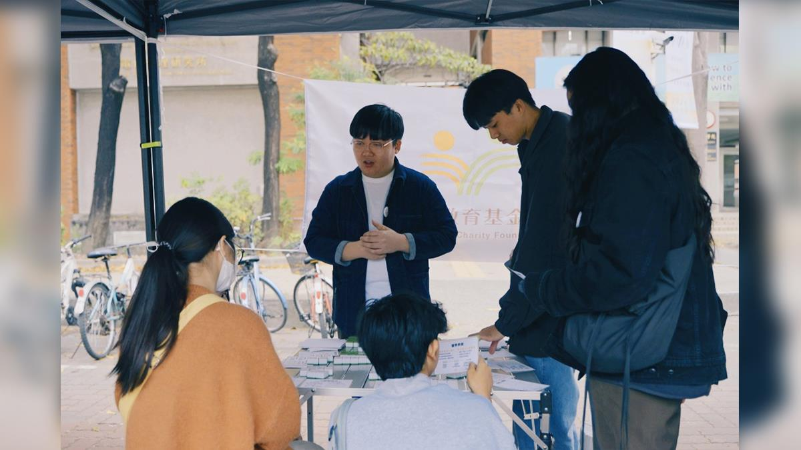
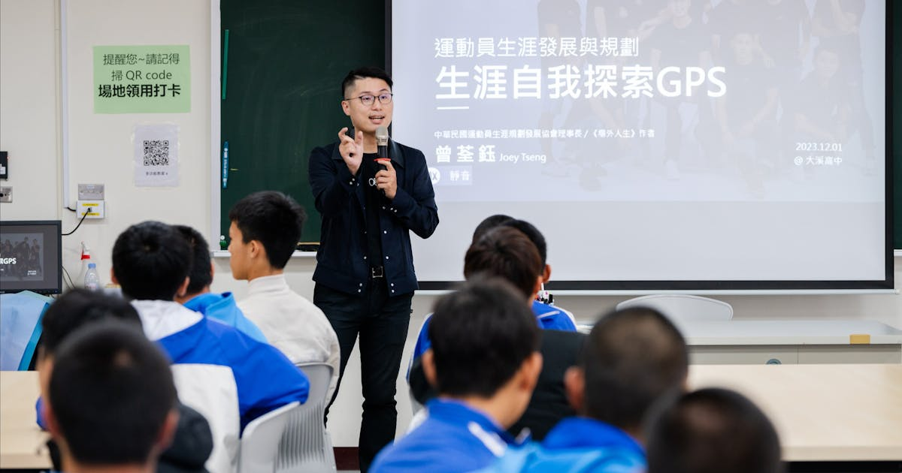
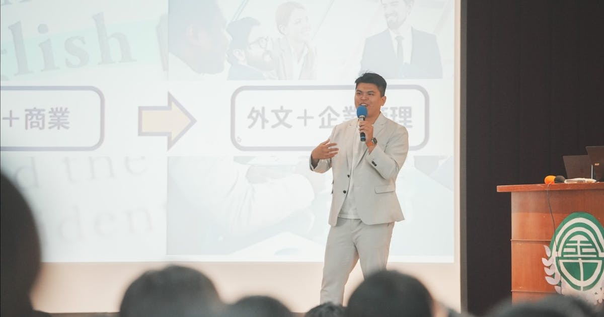
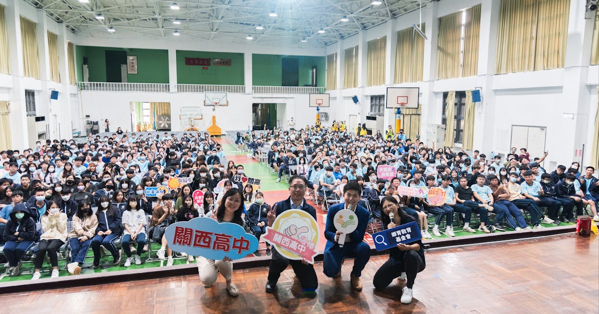
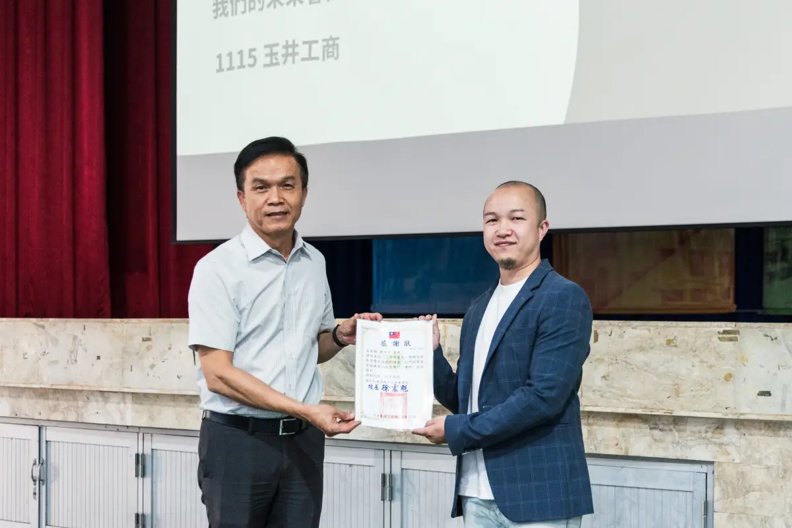
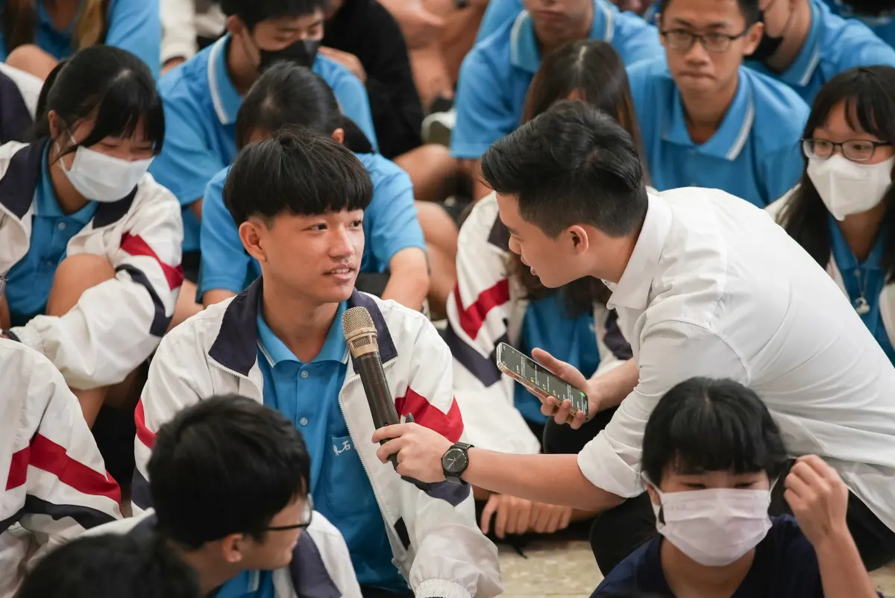
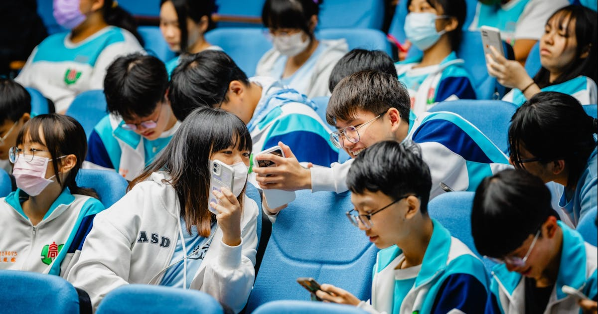
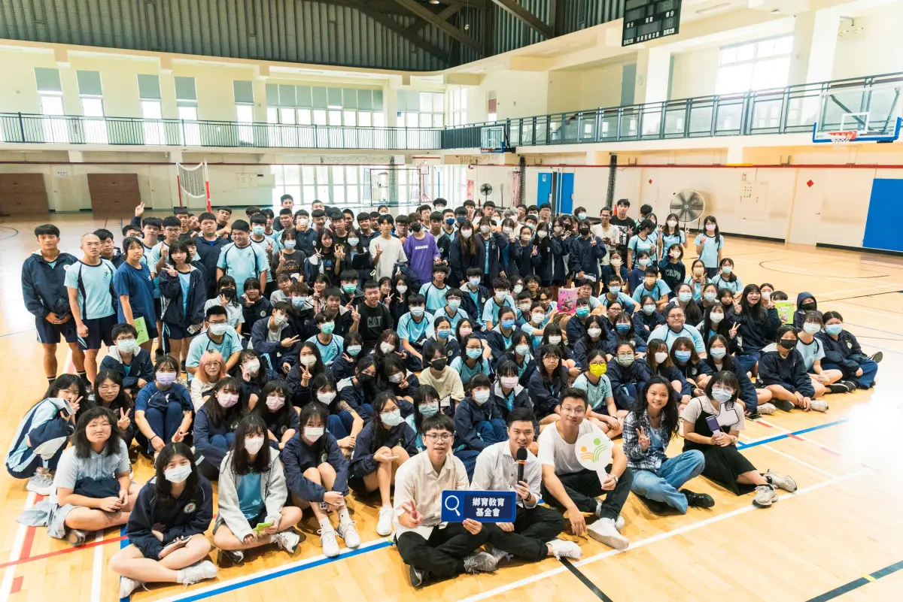
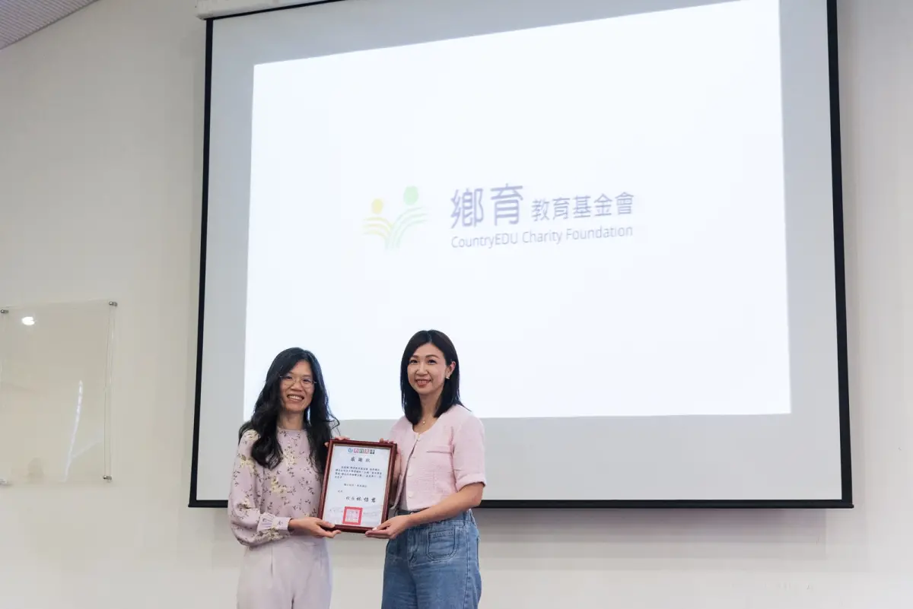

鄉育教育基金會攜手成大單車節 引領偏鄉高中生展開探索的蛻變之旅
報導鄉育與成大單車節跨界合作，帶領偏鄉高中生走進大學場域，透過活動理解科系、探索志向，累積面對未來選擇的自信。
閱讀報導 ↗Press
媒體報導
近三年，鄉育持續走進台灣各地高中與大學場域，陪伴偏鄉與地方青年進行生涯探索、學習歷程規劃、AI 素養理解與自主學習實作。以下整理公開媒體報導，記錄鄉育與學校、講師、社群及跨域夥伴一起推動教育資源平衡的行動軌跡。

報導鄉育與成大單車節跨界合作，帶領偏鄉高中生走進大學場域，透過活動理解科系、探索志向，累積面對未來選擇的自信。
閱讀報導 ↗
以運動員生涯轉銜為主軸，邀請曾荃鈺與大溪高中體育班對話，協助學生思考場上與場外的定位、優勢及未來選擇。
閱讀報導 ↗
邀請金門高中校友返鄉分享自身探索歷程，鼓勵離島學生將在地資源與生活經驗轉化為成長優勢，提前為大學與未來做準備。
閱讀報導 ↗
邀請國際新聞直播主浩爾前進關西高中，帶領學生理解 AI 對生活與職涯的影響，將科技趨勢轉化為生涯探索的提問與工具。
閱讀報導 ↗
鄉育與 XCHOOL 跨域素養協會、職涯顧問陳坤平合作，前進台南玉井工商，陪伴學生理解 AI 時代的學習方式與提問能力。
閱讀報導 ↗
邀請教育新創家小朱前進嘉義東石高中，以遊戲體驗與個人故事引導學生理解學習歷程，鼓勵學生看見有限資源中的創造力。
閱讀報導 ↗
報導鄉育與北港高中合作自主學習課程，協助學生從經驗、知識與技能累積個人特色，建立可持續發展的學習規劃。
閱讀報導 ↗
鄉育邀請超詳解團隊前進台中龍津高中，分享讀書方法與學習策略，協助地方學生建立可執行的自主學習節奏。
閱讀報導 ↗
邀請教育專家黃瑋芸前進台中新社高中，透過黃金圈等方法，引導學生把興趣、特質與學習成果轉化為具體學習歷程。
閱讀報導 ↗歡迎媒體朋友與我們聯繫，索取新聞稿、影像素材或安排採訪。我們會在收到來訊後儘快回覆。